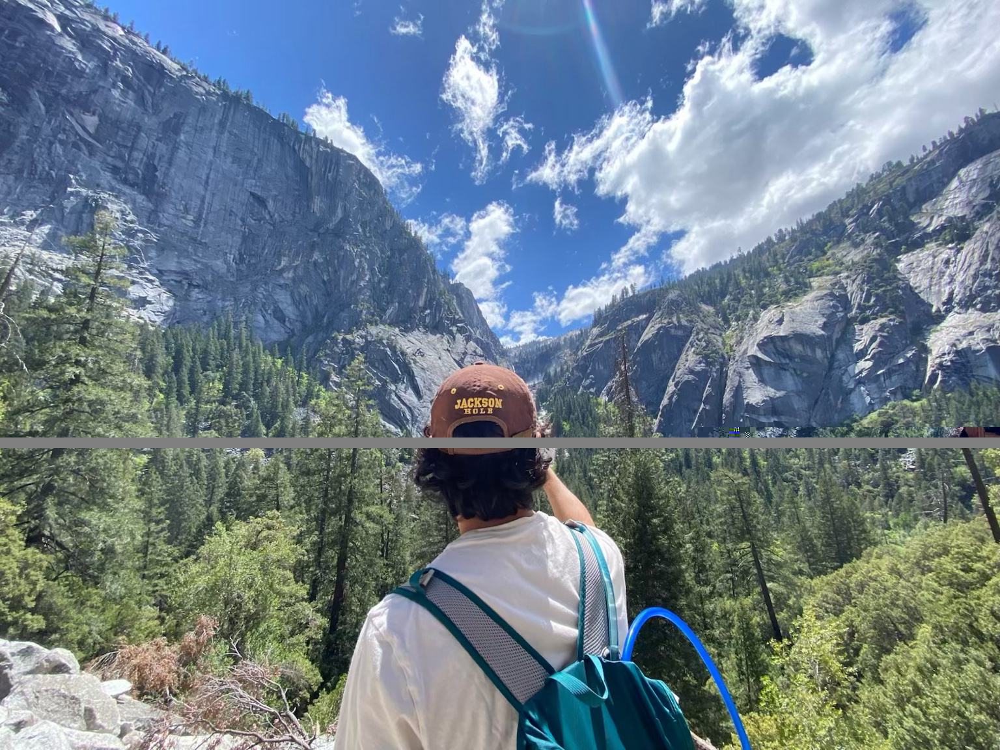
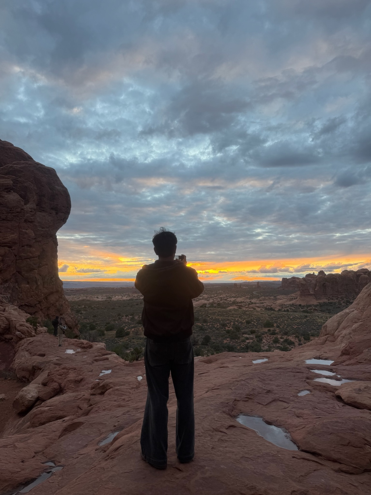
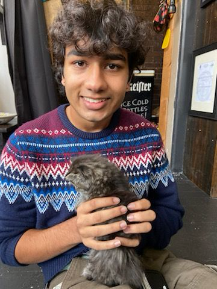

Hi, I’m Kailash.
Mechanical engineering student · WashU · Class of 2027
I’m studying mechanical engineering at Washington University in St. Louis, with minors in robotics and computer science. I love designing and building things, especially projects that bring mechanics, electronics, and software together.
My interest started with trains, cars, and LEGO. High school robotics turned it into something I wanted to pursue. Since then, I’ve worked on grocery automation, robotics hardware, research equipment, and student engineering projects.
When I’m not building something, you might find me on a hike, listening to music, or hanging out with my dog.
A little more about me
Outside of working on projects, internships, and school, there's a ton of things I love exploring. I absolutely love being outside in nature, exploring new places, and spending time with the people (and dog) I care about.
Outdoors
I love hiking - I've had a goal of making it to every national park for all of college. So far, Yosemite's probably my favorite, but southern Utah has some incredible options as well. This past summer, I got into surfing at Pleasure Point in Santa Cruz, and I ran cross country in high school where I fell in love with trail running at Rancho San Antonion. I also enjoy cooking, trying new restaurants, and tapping into my Indian roots with Bhangra & South Asian activities
Exploring new places
I studied abroad in Madrid, an experience that let me travel all over Europe, see life from a different perspective, and really helped me realize how beautiful the rest of the world is. I want to travel so much more in my life and next on my bucket list is Southeast Asia (especially Japan & South Korea)
Music & my dog
Listening to music and hanging out with my dog are two of my favorite ways to unwind.
Chicago sports
I'm a diehard Chicago Cubs fan, big time Bears & Warriors fan, and I love Carlos Sainz in F1. I'm also an Atletico Madrid fan whenever I watch futbol.



Experience
- Johnson & Johnson MedTech Robotics Hardware Intern · Summer 2026
- Fulfil Solutions Mechanical Engineering Intern · Summer 2025
- WashU Musculoskeletal Soft Tissue Lab MeshAlyzer · Research and system development
- WashU Mars Rover Team Robotic arm and claw design
- FRC Team 254 Technical Director · Competition robotics
What I’m working on
My senior design team is building a fan-powered thrust-vector-control demonstration for science center visitors. I’m also working on MeshAlyzer in the lab and developing web applications through my CSE 3300 coursework.
Explore my projects ↗